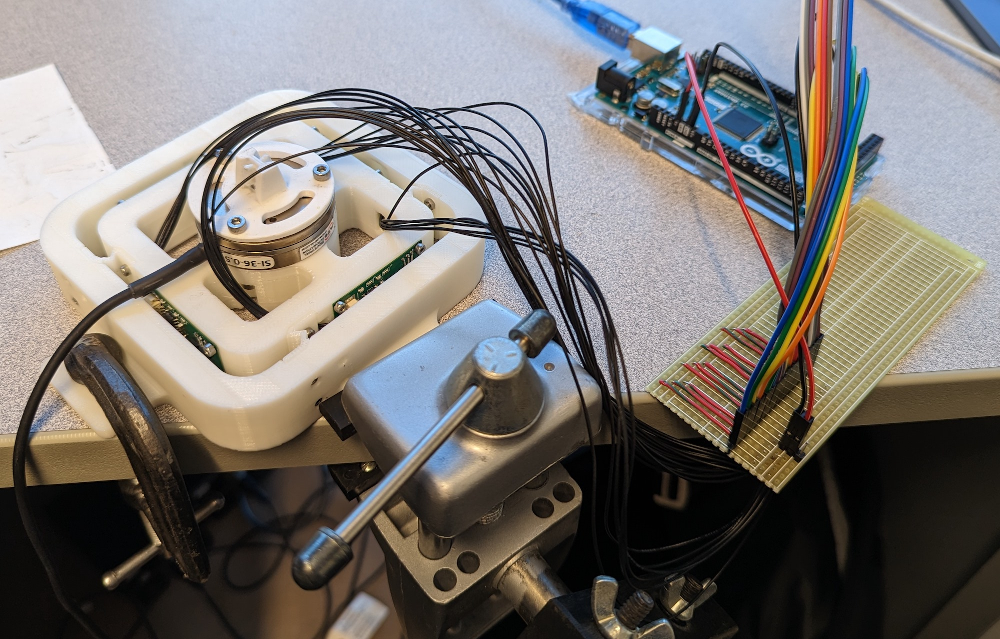
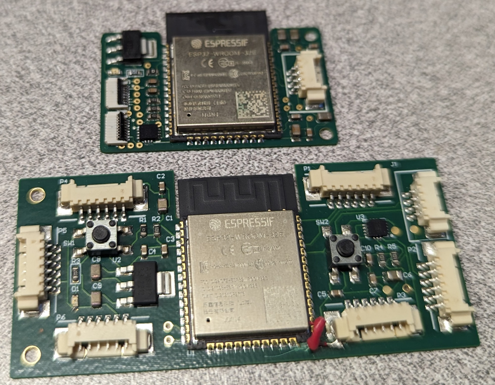
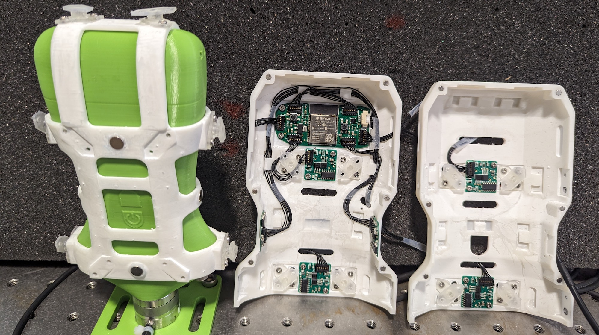
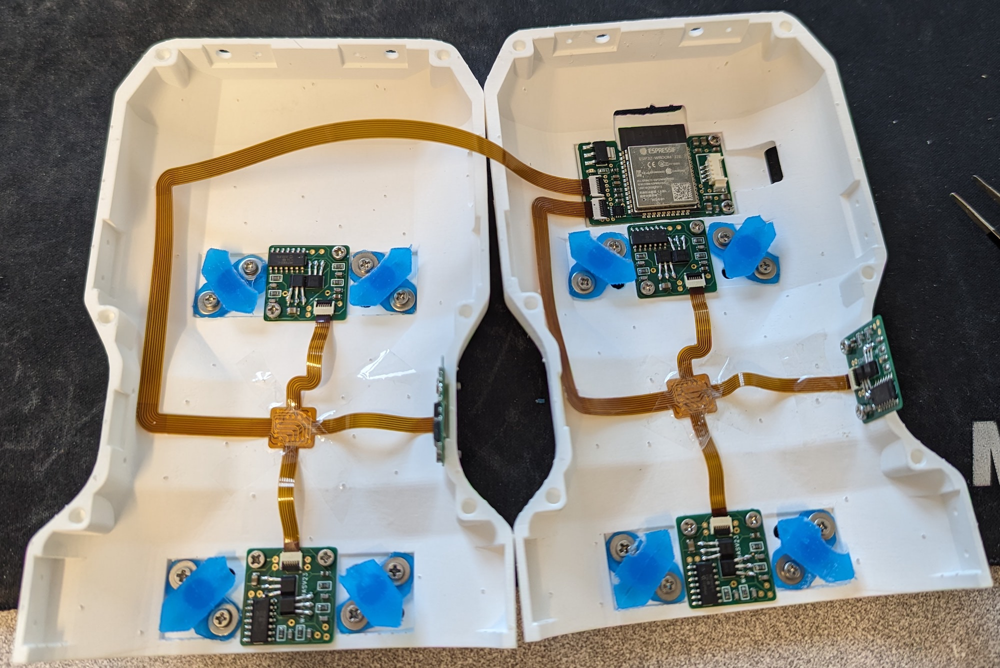
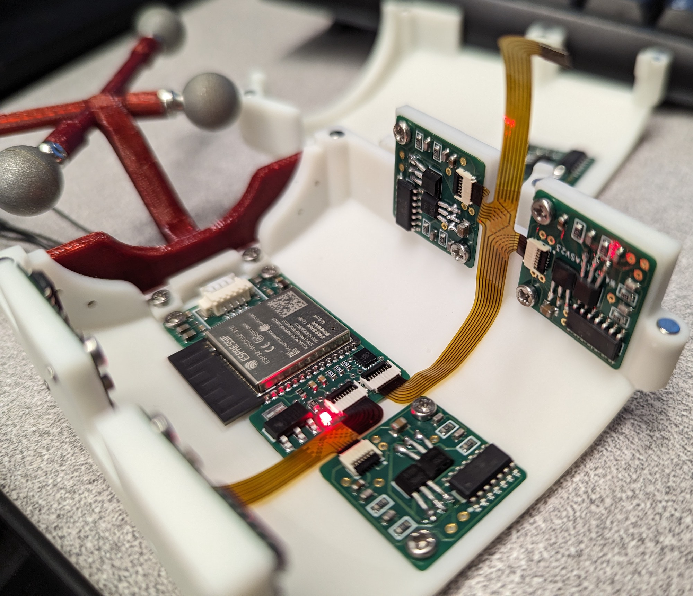
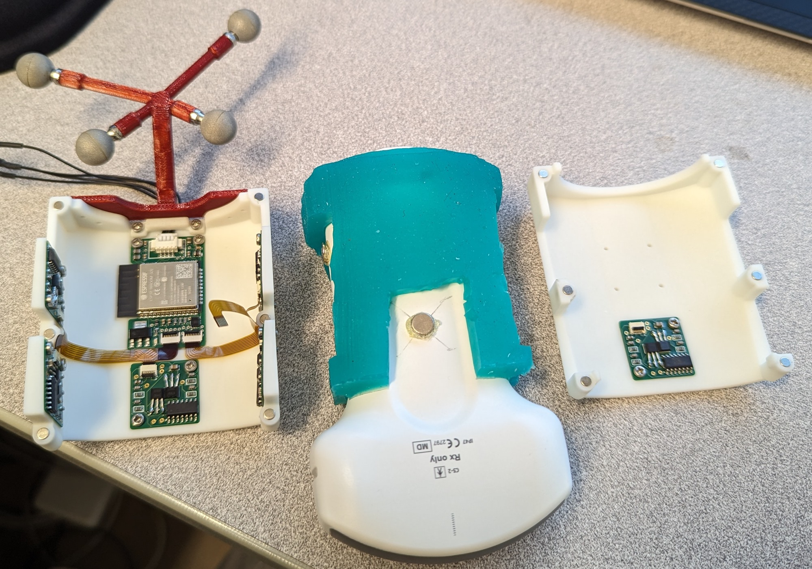
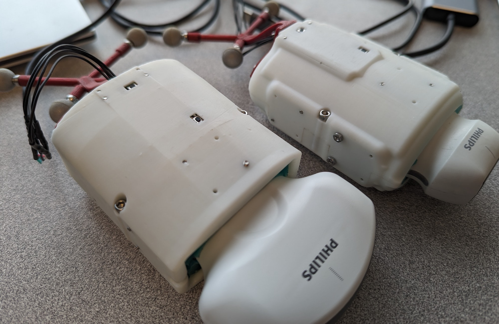

Low-Profile, Low-Cost 6-Axis Magnetic Force/Torque Sensing for Manual Tools
Date: September 2022 - Present

While working on our Human Teleoperation project, we needed a good solution for force/torque sensing on ultrasound probes. We quickly found that no such solution exists. Several groups have built off-the-shelf sensors like those from ATI into ultrasound probes, but this leads to very bulky devices, has too-low load capacity due to the large moment arm to the probe's face, and at least doubles the cost of the probe for modern point-of-care probes.
As alternatives we tried out piezoresistive pads and small single axis strain gauge-based sensors, and considered designing strain gauges, capacitive sensors, optical sensors, fibre Bragg gratings, and more. Each had drawbacks, though.
Instead, I had the idea of using pairs of Hall effect sensors in a differential configuration, placed opposite a small magnet. The magnets are on the probe while the sensors are on a low-profile shell around the probe, and the two are connected by a compliant suspension. By placing 6 sets of sensor modules around the probe, it should be possible to recover the 6-axis forces and torques. This is therefore what we set out to do.
Modeling, Prototyping and Testing
We first modeled the system in MATLAB to see if it was feasible and what approximate design parameters were needed (magnet size/strength, Hall effect sensor spacing, magnet offset, etc.). We then built simple 1-axis jigs to validate the simulation results, and prototyped signal conditioning circuits on a breadboard. All results were very promising.

3-Axis Sensor
Since the results of initial prototyping and testing were very promising, we built a 3-axis jig, measuring the in-plane forces and vertical torque. For this we also designed and fabricated initial prototype PCBs, including (1) six sensor module PCBs with the Hall effect sensors, analog signal conditioning circuitry, and on-board ADC for reduced noise, and (2) a master PCB with microcontroller and various circuitry for further processing and communication.

After a few iterations of the electronics design, we made much smaller PCBs, as shown below.

Ultrasound Probe Integration and Calibration
We next designed a 6-axis integration of the force sensors into a Clarius C3HD 3 probe. This is shown below. We 3D printed the shell using SLA and FormLabs Rigid 10K resin, and the suspension elements from elastic resin. We also 3D printed a dummy ultrasound probe which could mount directly to an ATI force sensor to carry out the calibration.

After some testing, we found that the 3D-printed suspension elements had large hysteresis and creep, so we replaced them with molded RTV (room temperature vulcanization) silicone. We also replaced the PCBs with new versions and much clearner wiring using flexible PCBs. The updates greatly improved the sensor performance and accuracy.

We have also designed force sensor integrations for the Philips Lumify linear and convex probes. For these, we molded the silicone directly inside the shell and probe in a single part. This greatly eases assembly and ensures a perfect fit even though we did not have the CAD models of the probes. It also means no inner shell is needed, so the sensors are much lower profile than the C3HD 3 one. Magnets hold the two halves of the shell together, and IR markers are included for HoloLens-based pose tracking. Both probes were calibrated using a similar method to the Clarius probe, with good results.



Detailed results and explanations of the optimization-based design method and neural network calibration can be found in our papers on the force sensors:
-
D. Black, N. Rangga, M. Nogami, A.H. Hadi Hosseinabadi, S. Salcudean. "Low Profile 6-Axis Differential Magnetic Force/Torque Sensing," in IEEE Transactions on Medical Robotics and Bionics, Submitted October 2023.
-
D. Black, A.H. Hadi Hosseinabadi, M. Nogami, N. Rangga, S. Salcudean. "Towards Differential Magnetic Force Sensing for Ultrasound Teleoperation," in IEEE World Haptics Conference, July 10-13, 2023, Delft, NL.
- D. Black, S. Salcudean. "Differential Magnetic Multi-axis Force Sensing," US Patent Office Provisional Patent. May 2023.